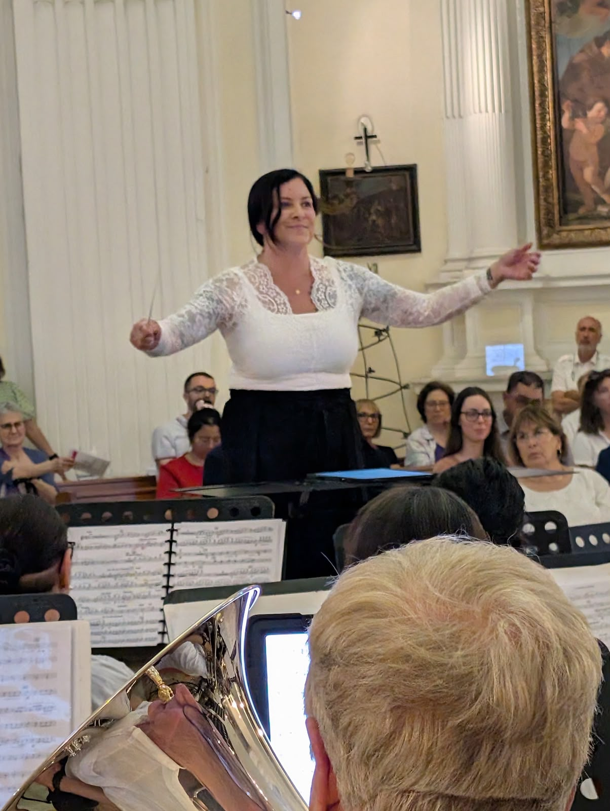
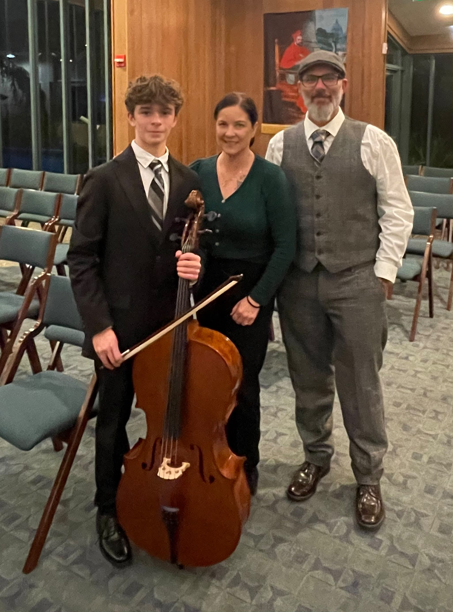
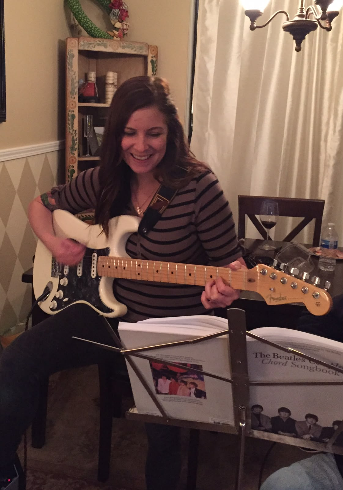

Hi! My name is Katie McKee, and music is my passion.
My vision is to form a new wind ensemble that is community based: casual, fun, and collaborative. For the past few years, I have been mentored by Ken Nakamoto as a conductor. I was a participant at the SJSU Conducting Symposium in 2024 and recently had the incredible fortune to conduct in Italy on an international trip with the San Jose Metropolitan Band. I am looking to continue my growth, learn from all of you, and create a unique opportunity for local musicians to play together at varied levels.
Music Background
Music has been a lifelong passion. I began playing clarinet in 4th grade and continued through high school, where I was a part of both Symphonic Band and Marching Band (as Drum Major). I've also played electric guitar since my teens, performing in Jazz Band, and attending music camps during summers. As a young adult, I played guitar in a rock/metal band and performed across the San Francisco Bay Area. Today, I'm a proud member of the San Jose Metropolitan Band for 15+ years, and I still enjoy making music with my family, including regular classic rock "fam jams" with my dad and brothers.
Over the past decade, while working full-time, I completed lower division music courses at West Valley College (pausing at Covid) and I have been playing clarinet with the West Valley College Symphonic Band on and off for 10 years. I hope to eventually return to school and complete my music degree.
Outside of Music
Music is my passion, but it's not my day job. I'm a District Leader in the coffee industry, which keeps me plenty busy!
I love spending time with my husband Brian and teenage son Luke: getting outdoors and into the mountains, going to San Jose Sharks games, exploring new places and foods, going to concerts, and playing games. We also enjoy music as a family in everything we do!
Interested in joining the ensemble?
Sign Up Here